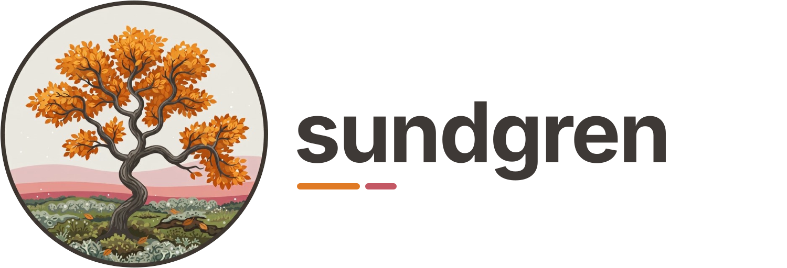

sundgren#

sundgren is a coverage diff tool, written in Rust. It is an analysis tool for understanding large
and complex codebases: it shows how a patch changes the coverage of your code. It runs your tests
with coverage on the tree before the patch and on the tree after it, and reports the lines,
branches, functions and test outcomes that changed. It is also a VS Code extension.
The comparison works with any coverage tool that writes lcov. The built-in presets are for Python (pytest with coverage.py) and Rust (cargo-llvm-cov or cargo-tarpaulin), and the extension works with Python and Rust projects.
Why#
LLM agents write a lot of code, and they are good at it. But they write more than anyone has time
to read. sundgren is a diagnostic tool for looking at how one patch changes a large and complex
codebase.
Tests describe what should happen when code runs, and coverage tools record which lines run during the tests. Comparing the coverage before and after a patch shows how the patch changes what the tests run. You can use it to refactor tests, for example to find unit tests that are redundant, or to check that a rewritten test still covers what the old one did.
It is for developers who want a deeper understanding of their codebase. Since it is a command-line tool with a JSON report, agents can use it too when they refactor code.
Important
Coverage only shows which lines ran. A line being covered does not imply that the code is tested correctly.
Sundgren is Swedish for “sound branch”, and my mother’s family name.
What it looks like#
Skipping test_divide, the only test that calls divide, makes divide go dark:
tests.test_calc::test_dividepassed→skipped4 other tests unchanged.
mypackage/calc.pyThe examples show the project, the patch and the command behind this, and more cases in Python and Rust.
Install#
Install the sundgren package from PyPI as a tool, with
uv or pipx. It is a single program for Linux and macOS and needs no Python to run. sundgren works
with Python projects (coverage.py and pytest), Rust projects (cargo-llvm-cov or cargo-tarpaulin)
and any tool that writes lcov.
Where next#
Examples: common cases, from a patch that only touches tests to your own commands with placeholders.
How it works: the worktrees, which tests run, and how the two runs are compared.
Reference: every option, preset key, placeholder, exit code and warning.
VS Code: pluck a test from the editor and see what it does to coverage.